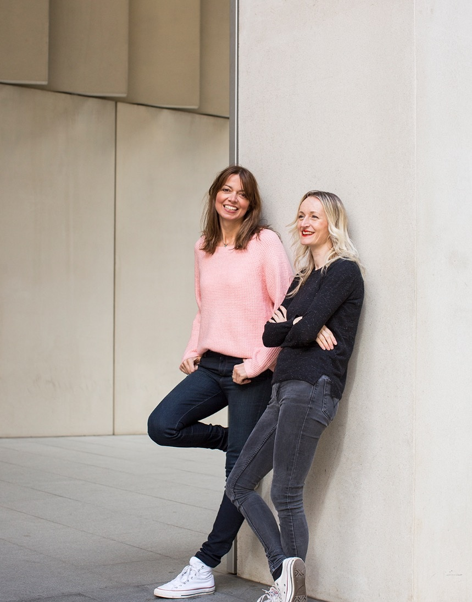

About BOLDER
Life lessons from people older and wiser than you.

BOLDER was founded by writer Dominique Afacan and photographer Helen Cathcart to challenge the way we think about getting older.
Through candid conversations and striking portraits, BOLDER celebrates people who are living life on their own terms, whatever their age.
From adventurers and artists to athletes and entrepreneurs, our interviewees prove that curiosity, ambition and a sense of adventure don't have an expiry date.
The project inspired our book, Bolder: Life Lessons from People Older and Wiser Than You, published by Hardie Grant in 2019.